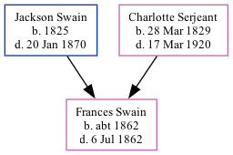

Frances E Swain c1862 - 1862
[ Home ] | [ Calendar ] | [ Surnames Index ] | [ Family History ]The child of Jackson Swain and Charlotte SerjeantFrances Swain, the second cousin four-times-removed on the mother's side of Nigel Horne, was born c. 1862.
She died on Jul 6, 18621 and was buried at Lindenwood Cemetery, Fort Wayne, Allen, Indiana, USA after Jul 6, 1862.
Parents
- Jackson was born in 1825
- Charlotte was born on Mar 28, 1829
Citations
- United States Billion Graves index - Findmypast
Media
Charles Swain - headstone

United States Billion Graves index - US/BMD/BILLION/7/0360920
Family Tree

Map
Generated by Ged2Site. Last updated on Apr 1, 2025